A major geotechnical hazard that has had profound impacts on the stability of civil engineering infrastructures is Earthquake-Induced Soil liquefaction.
During this dissertation, I aim to explore the consequences of Earthquake-Induced Soil liquefaction reinforced through analysis of real-life case studies.
The Article first examines the mechanisms of the soil liquefaction. Liquefication leads to significant structural and safety issues. Therefore, the following
section will discuss the structural implications. This will follow with a case study that I have done on some extensive earthquakes, including Christchurch (2011),
Niigata (1964) and Kobe (1995), these examples demonstrate the challenges that liquefaction introduces to civil engineering practice.
Introduction
One of the main geotechnical risks in civil engineering is associated with seismic activity which is Earthquake- Induced Soil liquefication .When there are seismic vibrations
during an earthquake the loose soil particles and saturated pores experience extreme shaking thus increasing the pore water pressure, which reduces effective stress and causes
the soil to lose its strength and rigidity.(Lees,2024) Soil can behave like fluid temporarily during this, which leads to ground deformation, lateral spreading, uneven settlement,
and the failure of foundations. These effects can endanger long-term ground subsidence as soil particles reorganise into a denser state after liquefaction but also threaten the stability
of buildings and infrastructure during the earthquake. The most vulnerable areas are ones which are supported by loose sand and pores filled with high water contents . This will be discussed
more in detail through 3 major case studies explored in the article - Kobe (1995) and Christchurch (2011).
The Mechanism
During an earthquake, soils can undergo a sudden change in stress conditions that cause them to transition from a solid state to behaving more like a liquid. (Irfan,2024) Soil is made up of solid
grains with water filled pores between them, and its strength mainly depends on effective stress, which is the force transmitted between those grains. When an earthquake occurs, the propagation of
stress waves increases the pore water pressure within the soil. As pore water pressure rises, effective stress drops, meaning the grains lose contact with one another and the soil rapidly loses strength
and structure. At this point, the soil can temporarily behave like a fluid, becoming soft and unable to support loads, which may cause buildings to settle unevenly, tilt or even collapse. The soil’s particle
size distribution, shape and gradation also influence how easily it can density and lose strength under these conditions.
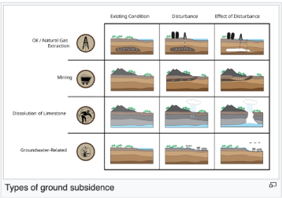
After liquefaction, the weakened ground may sink downward as the particles settle into a denser, more compact arrangement, a process which is known as ground surface subsidence.(Applied Earth Sciences, 2022)-Subsidence,
whether triggered by earthquakes, landslides or human activity, can significantly affect the long-term stability and safety of buildings and infrastructure.(SatSense Solutions, n.d.)
Case Studies
Case Study Number 1 The Kobe Earthquake 1995
Port Island and Rokko Island are man-made islands built on the seabed near the shore, and this was produced by depositing granite and crushed mudstone into the sea 2 m below the water surface.(GEER Association,1995) Both materials
in the fill were coarse, well-graded granular fills with only minor variation in fines, and the fill that resulted from this was uncompacted and fully saturated, making the islands vulnerable to earthquake-induced liquefaction.(Tanaka,2000)
While these deeper layers were dumped from barges, the upper few metres were placed above water, making them compacted, stronger, and more stable; however, when seismic shaking sharply increased pore water pressure, the islands lost strength
and liquefied. Settlement occurs when soil compresses under load, and as the pore water carries part of the load, the pore pressure rises until the water drains and soil particles move closer together.(Lees,2024)
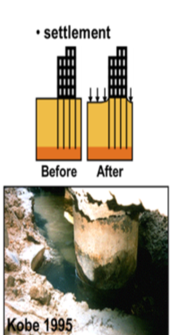
During settlement and strength loss, the soil progressed sideways toward free faces near quay walls and shorelines, eroding
foundations and causing tilting, cracking, and uneven sinking—behaviour known as lateral spreading. When liquefaction ended, soil particles rearranged into a denser configuration, causing significant vertical settlement.
Most quay walls moved about 5 m toward the sea and inclined 3-4 degrees(Dash&Bhattacharya,2010) while shoreline quay walls moved 2-3 m outward and settled roughly 1 m, and liquefaction caused 20-50 cm of ground settlement.(Soga,1998) Pipeline damage
was extensive, with 1,757 cumulative distribution pipe failures, since soft, liquefied soil could not support buried lines. Cast-iron pipe damage in liquefied zones was twice that in non-liquefied areas, and ductile T-cast iron with mechanical joints
experienced four times greater damage in severely liquefied ground.(Kitaura,Miyajima & Nakagawa,1999) The stresses during the earthquake exceeded the yield stress of pile materials, causing piles to bend sideways or shear. Even when some piles remained
intact, settlement beneath them caused buildings to tilt and sink. Movement of the ground and quay walls displaced crane bases, pulling them off their rails and causing collapse, and crane rails were deformed, with severe crane damage particularly evident
on Rokko Island; cracking and spalling also appeared at the tops of reinforced-concrete piles.(National Science Foundation, 1995)
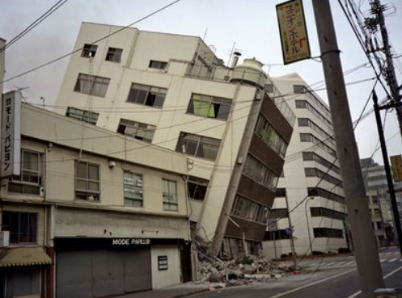
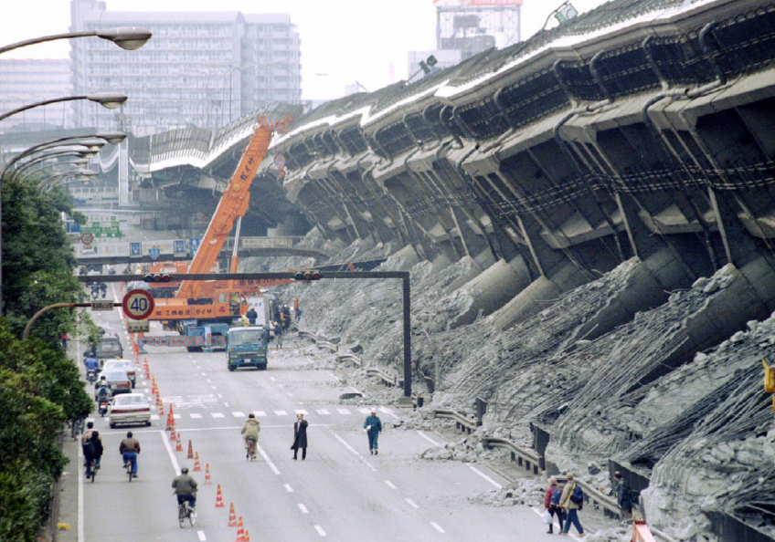
The disaster underscored the importance of modern seismic standards, mandatory retrofitting, stricter codes, and advanced seismic isolation, along with ground-densification methods such as sand compaction piles, vibro-rods, vibro-flotation, dynamic consolidation,
and vibratory tamping. (National Science Foundation, 1995)
Case Study Number 2 The Christchurch Earthquake 2011
On 22nd February 2011, a Mw 6.2 earthquake hit Christchurch(Kaiser et al., 2021), which caused 185 casualties and severe damage that was mostly around eastern suburbs and CBD.(NZ History, 2023) The 10 seconds lasting earthquake had extreme effects due to its shallow
focus and proximity to the city, which was already damaged due to the Canterbury 2010 earthquake. 70% of the nearly 3000 buildings in the CBD were either destroyed or deemed unfit for repair. This was in areas like Merivale, Burnwood, Dallington and Addington that were
most affected by the liquefaction, which impacted around 60,000 buildings, with nearly 20,000 severely damaged and 8000 abandoned because of high repair costs.(Cubrinovski et al.,2016) Tilted structures, differential settlement, and lateral spreading was caused due to approximately
400,000 tonnes of silt being produced, mostly in one-story timber-frame homes.(Cubrinovski et al.,2013)
On shallow foundations, many buildings resting on loose sands and silty sands suffered nonuniform settlements due to liquefaction.(Canterbury Earthquakes Royal Commission, 2011)
On the other hand, buildings with deep foundations performed better by reaching more stable layered soil. Water, sewer and telecommunications are essential infrastructures that were damaged, with 80% of mains affected in liquefied areas. (Bray et al., 2013)Red zones were created in areas
with extensive damage, deemed unfit for rebuilding due to liquefaction risks. To reduce future risks and ensure the use of suitable foundations, site-specific liquefaction investigations were carried out.(Herbert,n.d.)
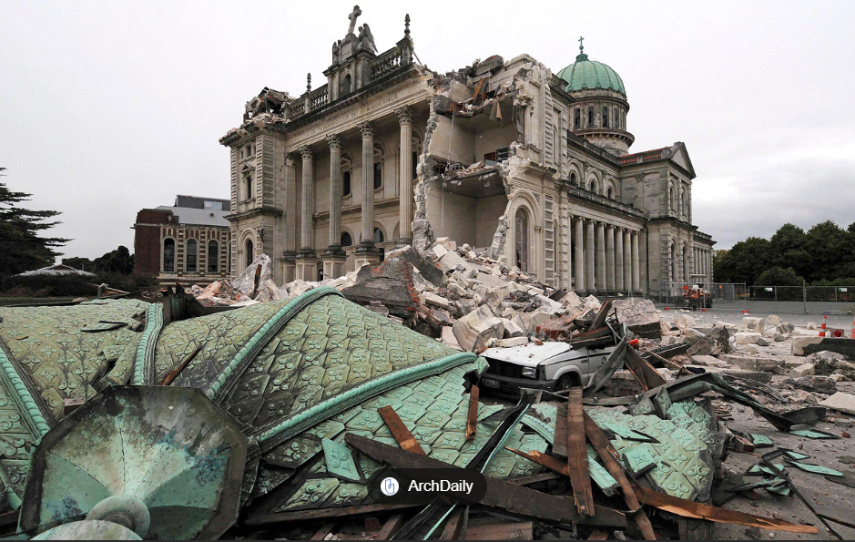
Conclusion
To conclude, earthquake-induced soil liquefaction showcases a significant challenge for civil engineers, mostly in areas with water-saturated, loose soils. Devastating impacts of liquefaction on infrastructure can be highlighted through the case studies
of Kobe (1995) and Christchurch (2011), from foundation failures to ground subsidence and lateral spreading. When designing structures, engineers must take into account the potential for soil liquefaction, using ground-densification techniques, advanced
seismic standards, and site-specific investigations to spread risk. For improving construction practices and ensuring safer, more resilient buildings in seismic-prone areas, it would be crucial to understand the mechanisms and consequences of liquefaction.

 During an earthquake, soils can undergo a sudden change in stress conditions that cause them to transition from a solid state to behaving more like a liquid. (Irfan,2024) Soil is made up of solid
grains with water filled pores between them, and its strength mainly depends on effective stress, which is the force transmitted between those grains. When an earthquake occurs, the propagation of
stress waves increases the pore water pressure within the soil. As pore water pressure rises, effective stress drops, meaning the grains lose contact with one another and the soil rapidly loses strength
and structure. At this point, the soil can temporarily behave like a fluid, becoming soft and unable to support loads, which may cause buildings to settle unevenly, tilt or even collapse. The soil’s particle
size distribution, shape and gradation also influence how easily it can density and lose strength under these conditions.
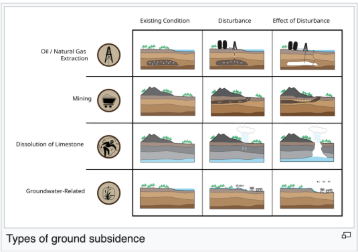
After liquefaction, the weakened ground may sink downward as the particles settle into a denser, more compact arrangement, a process which is known as ground surface subsidence.(Applied Earth Sciences, 2022)-Subsidence,
whether triggered by earthquakes, landslides or human activity, can significantly affect the long-term stability and safety of buildings and infrastructure.(SatSense Solutions, n.d.)
During an earthquake, soils can undergo a sudden change in stress conditions that cause them to transition from a solid state to behaving more like a liquid. (Irfan,2024) Soil is made up of solid
grains with water filled pores between them, and its strength mainly depends on effective stress, which is the force transmitted between those grains. When an earthquake occurs, the propagation of
stress waves increases the pore water pressure within the soil. As pore water pressure rises, effective stress drops, meaning the grains lose contact with one another and the soil rapidly loses strength
and structure. At this point, the soil can temporarily behave like a fluid, becoming soft and unable to support loads, which may cause buildings to settle unevenly, tilt or even collapse. The soil’s particle
size distribution, shape and gradation also influence how easily it can density and lose strength under these conditions.
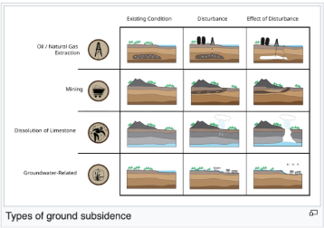
After liquefaction, the weakened ground may sink downward as the particles settle into a denser, more compact arrangement, a process which is known as ground surface subsidence.(Applied Earth Sciences, 2022)-Subsidence,
whether triggered by earthquakes, landslides or human activity, can significantly affect the long-term stability and safety of buildings and infrastructure.(SatSense Solutions, n.d.)
 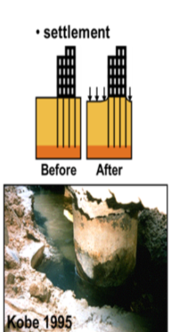
During settlement and strength loss, the soil progressed sideways toward free faces near quay walls and shorelines, eroding
foundations and causing tilting, cracking, and uneven sinking—behaviour known as lateral spreading. When liquefaction ended, soil particles rearranged into a denser configuration, causing significant vertical settlement.
Most quay walls moved about 5 m toward the sea and inclined 3-4 degrees(Dash&Bhattacharya,2010) while shoreline quay walls moved 2-3 m outward and settled roughly 1 m, and liquefaction caused 20-50 cm of ground settlement.(Soga,1998) Pipeline damage
was extensive, with 1,757 cumulative distribution pipe failures, since soft, liquefied soil could not support buried lines. Cast-iron pipe damage in liquefied zones was twice that in non-liquefied areas, and ductile T-cast iron with mechanical joints
experienced four times greater damage in severely liquefied ground.(Kitaura,Miyajima & Nakagawa,1999) The stresses during the earthquake exceeded the yield stress of pile materials, causing piles to bend sideways or shear. Even when some piles remained
intact, settlement beneath them caused buildings to tilt and sink. Movement of the ground and quay walls displaced crane bases, pulling them off their rails and causing collapse, and crane rails were deformed, with severe crane damage particularly evident
on Rokko Island; cracking and spalling also appeared at the tops of reinforced-concrete piles.(National Science Foundation, 1995)
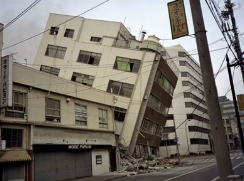
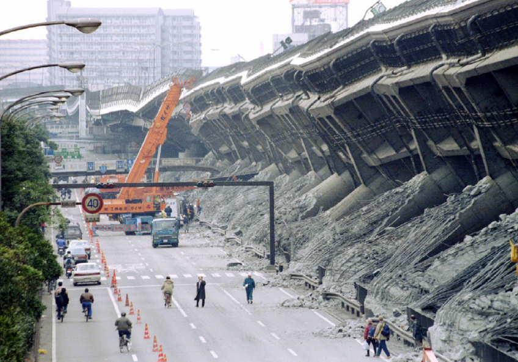
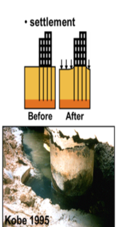
During settlement and strength loss, the soil progressed sideways toward free faces near quay walls and shorelines, eroding
foundations and causing tilting, cracking, and uneven sinking—behaviour known as lateral spreading. When liquefaction ended, soil particles rearranged into a denser configuration, causing significant vertical settlement.
Most quay walls moved about 5 m toward the sea and inclined 3-4 degrees(Dash&Bhattacharya,2010) while shoreline quay walls moved 2-3 m outward and settled roughly 1 m, and liquefaction caused 20-50 cm of ground settlement.(Soga,1998) Pipeline damage
was extensive, with 1,757 cumulative distribution pipe failures, since soft, liquefied soil could not support buried lines. Cast-iron pipe damage in liquefied zones was twice that in non-liquefied areas, and ductile T-cast iron with mechanical joints
experienced four times greater damage in severely liquefied ground.(Kitaura,Miyajima & Nakagawa,1999) The stresses during the earthquake exceeded the yield stress of pile materials, causing piles to bend sideways or shear. Even when some piles remained
intact, settlement beneath them caused buildings to tilt and sink. Movement of the ground and quay walls displaced crane bases, pulling them off their rails and causing collapse, and crane rails were deformed, with severe crane damage particularly evident
on Rokko Island; cracking and spalling also appeared at the tops of reinforced-concrete piles.(National Science Foundation, 1995)
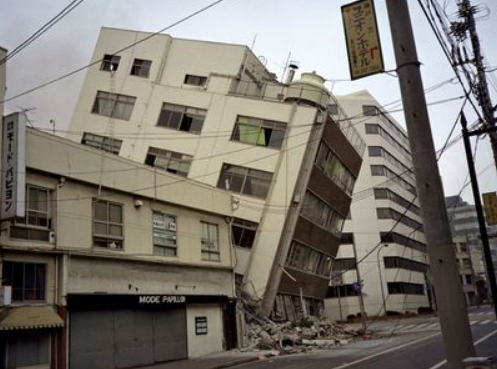
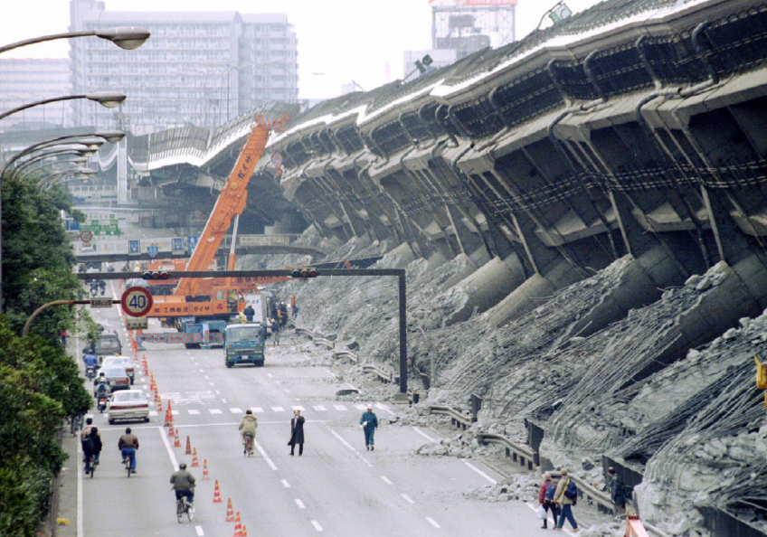
 The disaster underscored the importance of modern seismic standards, mandatory retrofitting, stricter codes, and advanced seismic isolation, along with ground-densification methods such as sand compaction piles, vibro-rods, vibro-flotation, dynamic consolidation,
and vibratory tamping. (National Science Foundation, 1995)
The disaster underscored the importance of modern seismic standards, mandatory retrofitting, stricter codes, and advanced seismic isolation, along with ground-densification methods such as sand compaction piles, vibro-rods, vibro-flotation, dynamic consolidation,
and vibratory tamping. (National Science Foundation, 1995)
 On shallow foundations, many buildings resting on loose sands and silty sands suffered nonuniform settlements due to liquefaction.(Canterbury Earthquakes Royal Commission, 2011)
On the other hand, buildings with deep foundations performed better by reaching more stable layered soil. Water, sewer and telecommunications are essential infrastructures that were damaged, with 80% of mains affected in liquefied areas. (Bray et al., 2013)Red zones were created in areas
with extensive damage, deemed unfit for rebuilding due to liquefaction risks. To reduce future risks and ensure the use of suitable foundations, site-specific liquefaction investigations were carried out.(Herbert,n.d.)
On shallow foundations, many buildings resting on loose sands and silty sands suffered nonuniform settlements due to liquefaction.(Canterbury Earthquakes Royal Commission, 2011)
On the other hand, buildings with deep foundations performed better by reaching more stable layered soil. Water, sewer and telecommunications are essential infrastructures that were damaged, with 80% of mains affected in liquefied areas. (Bray et al., 2013)Red zones were created in areas
with extensive damage, deemed unfit for rebuilding due to liquefaction risks. To reduce future risks and ensure the use of suitable foundations, site-specific liquefaction investigations were carried out.(Herbert,n.d.)
 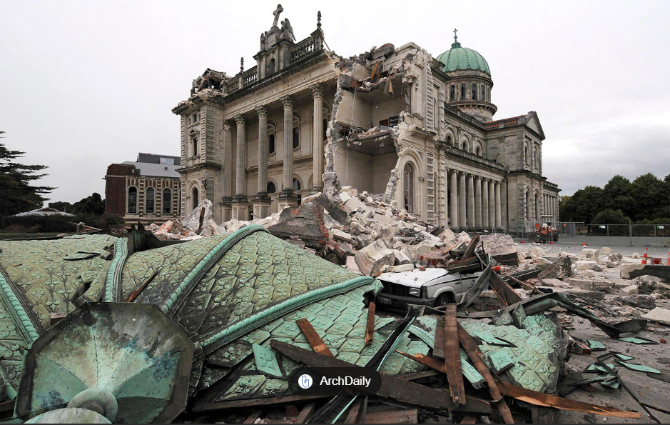
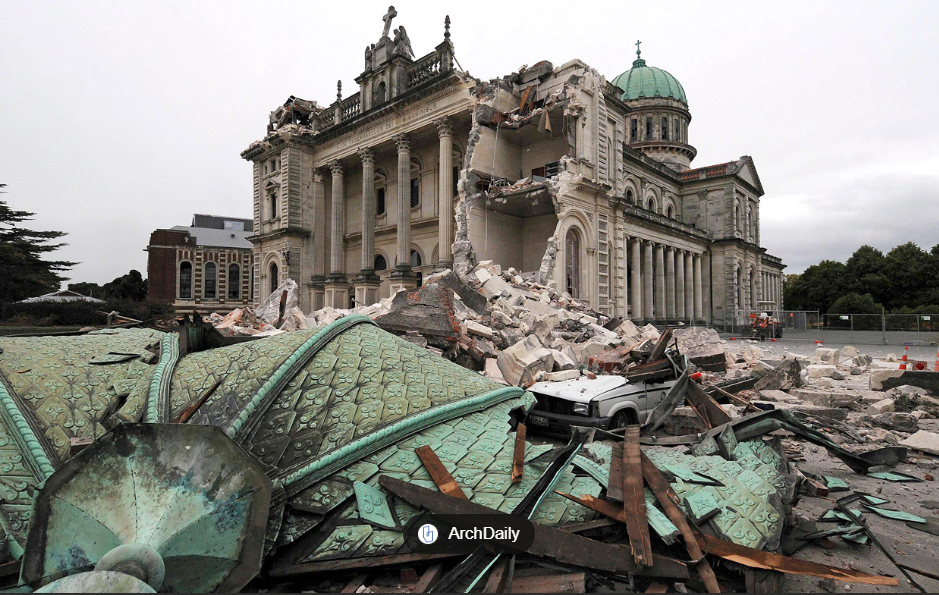